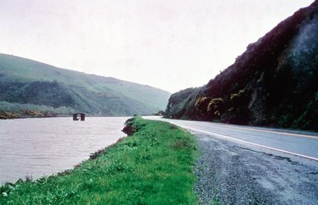

Northwest Passage Scenic Byway Tour
Posted on Sat 13 January 2024 in Rides
| Distance | : | Ride Time | |
|---|---|---|---|
| 206 miles | : | 6 hours | |
The Northwest Passage Scenic Byway is Idaho’s longest byway. This route follows the route Lewis and Clark navigated through north-central Idaho. It begins at Lewiston, and arrives in Lolo Pass to the east. The traverse winds along the Clearwater River Canyon, parting toward the Camas Prairie on one side while continuing along the Middle Fork of the Clearwater River on the other.
This byway moves through a magnificent wilderness, including the Lochsa Wild and Scenic River, and ends at the Lolo Pass Visitor Center. Following the route along U.S. 12 parallels the history trails of Lewis and Clark and Nez Perce. Before departing, stop to visit Hells Gate State Park, a public recreation area and entrance to Hells Canyon, the deepest canyon in North America, on the southern edge of Lewiston. And be sure to stop to see the Tsceminicum sculpture, a bronze artwork that speaks of Nez Perce legend creatures, located where the Clearwater and Snake Rivers meet in Lewiston.

You'll visit the Nez Perce National Historical Park Visitor Center, which honors the inland northwest home to the Nimiipuu (Nez Perce) people, in nearby Spalding. The park consists of 38 places that are significant to the history and culture of the Nimiipuu. Located in Orofino off Hwy 12 is Canoe Camp, the location where Lewis and Clark, with the help of the Nimiipuu, built five canoes that would deliver them to the Pacific Ocean. According to the Nez Perce creation story, a coyote killed a large monster along the Clearwater River near present-day Kamiah, which resulted in the creation of different tribes in the region. The Heart of the Monster is a rock formation that represents this legend, also located within the park.
Kooskia Crossing is an historical marker that reveals four descriptive panels about the significance of the area. These panels are about the Lewis and Clark expedition; the Nez Perce flight of 1877; the brave quest of the Nimiipuu, called a Warrior’s Journey; and a timeline along the Clearwater River, called A Rich Traditional Land Use. Headquartered in Kooskia, the Lochsa Ranger District covers nearly 400,000 acres and offers plenty of wildlife viewing and recreational opportunities, including hiking and fishing.
Along the Idaho/Montana border is the DeVoto Cedar Grove, where the ashes of conservationist and historian Bernard DeVoto (1897-1955) are spread. The area was significant to his editorial work on the Journals of Lewis and Clark, with cedars towering the landscape, up to 100 feet tall and 6 feet in diameter. Approaching the end of the byway is the Lolo Pass Visitor Center, an historical landmark where Lewis and Clark crossed over the pass in the Bitterroot Mountains.
*Take the option to extend your trip from Lolo MT through Salmon, ID and into Boise. (585 mi 12H)*